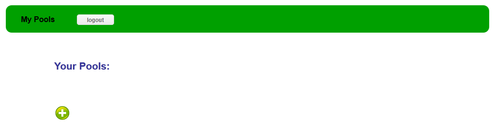
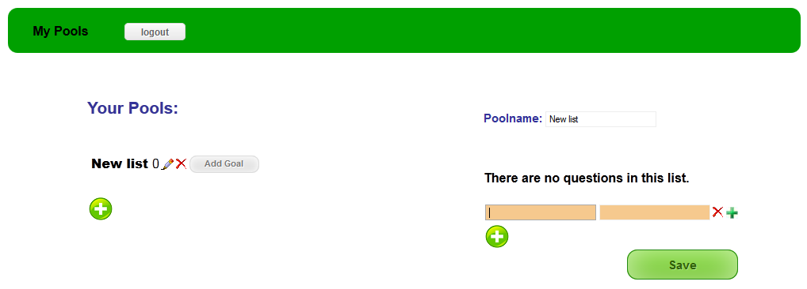
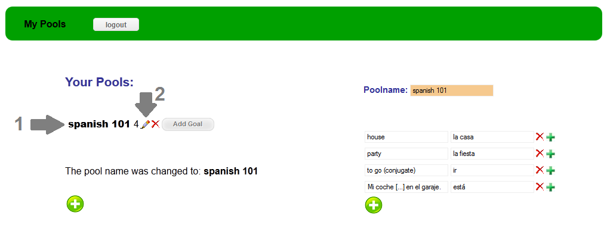

Introduction and overview over the features
After the first login the page should look like this:

By clicking on the [Plus] button you can create a new vocabulary list:

Here you can enter various types of vocabulary, simple 1:1 words like "house" and "party",
questions with multiple answers like the conjugation of "to go", or multiple choice questions.
- Plus button to expand the answer field to enter multiple answers.
- Check Box to choose which answer is correct for multiple choice questions.

By clicking on the save button now, the list is saved into the database and you can start studying it by clicking on the pool's name in the pool list (1) .
Also you can edit the list at any time (2) or delete it.

Then the trainer starts where you type in the answer into the textarea and then click on check to evaluate it (or hit Enter key instead).

If you type in a wrong answer but want to accept it as a right answer anyway, you can click on [Accept].
By clicking [Check] the trainer assumes you didn't know the answer and will ask you the question more often.

If you have a question with multiple answers, the correct answers that you already typed in will appear on the right hand side of the window.
Also, if some of the answers are typed in incorrectly, the correct ones will appear here when the question is repeated.

Multiple choice answers are displayed as follows.
By clicking on one of the choices, you select it as a correct answer and the background color switches from grey to blue.
A click on the [Check] button evaluates your choices with the ones you entered when you created the list.